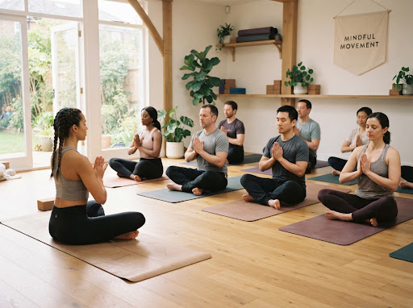
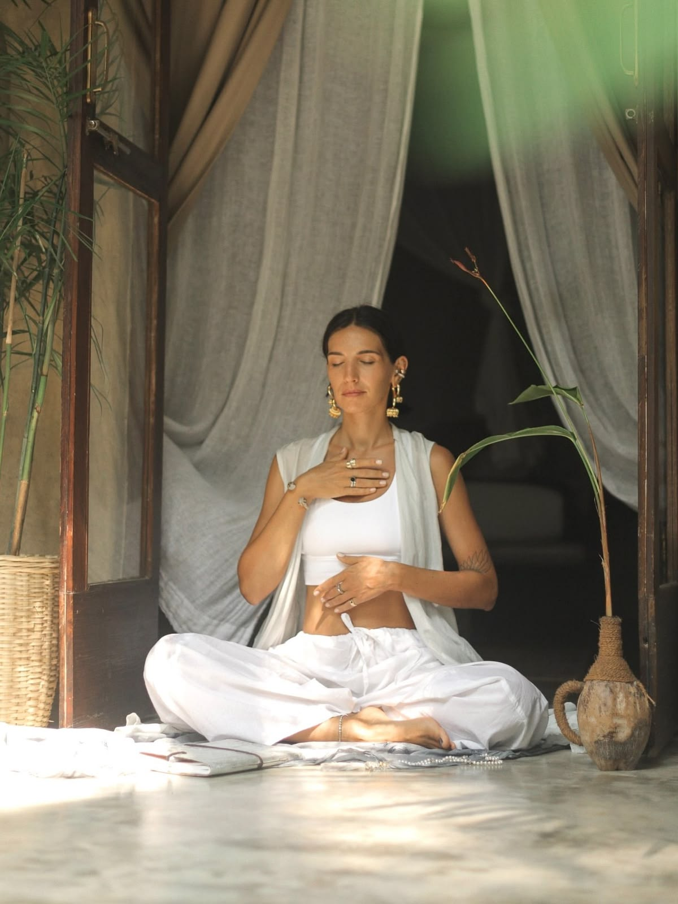
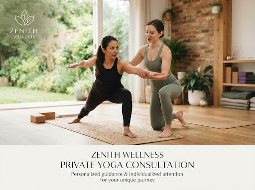

All LevelsPrivate Yoga
One-on-one sessions tailored specifically to your goals, addressing individual needs and limitations.
- 60–90 Min
- In-Person / Online
- Sarah Jenkins
Our Programs
Whether you’re looking to deepen your practice, build strength, or find personal wellness goals. From energizing morning flows to deep meditative stretches, our expert instructors are here to guide your journey.


All LevelsOne-on-one sessions tailored specifically to your goals, addressing individual needs and limitations.

All LevelsA gentle introduction to foundational yoga poses, focusing on alignment and breathing techniques.
 All Levels
All LevelsBalance body and mind with sustained poses and controlled breathing designed for deeper physical awareness.
Our wellness advisors can help you navigate our class offerings and find the perfect practice to support your personal journey and goals.
Get a Free Consultation →Absolutely. Our beginner program introduces each pose and breathing technique at a comfortable pace.
Bring comfortable clothing and water. Mats and basic props are available at the studio.
Please arrive 10–15 minutes early so you have time to settle in before class.
Yes. Private sessions and selected group programs are available online.